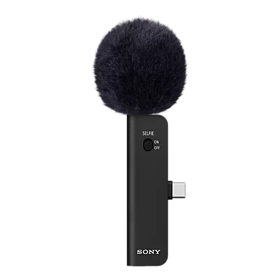
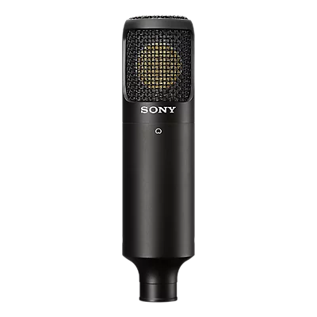
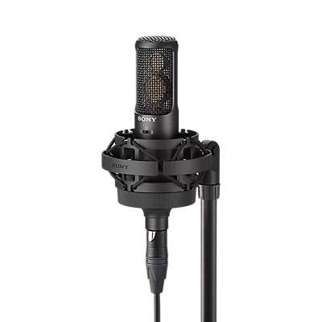
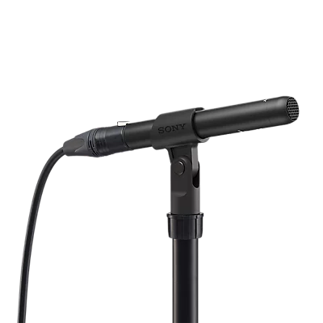
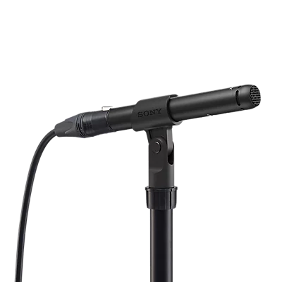

Mikrofonok
Mikrofonok
5
Termékek

ECM-AX10 Spatial Audio okostelefonhoz való mikrofon
- Újonnan kifejlesztett mikrofonegység a valósághű hang rögzítéséhez.
- Kompakt kialakítás, közvetlenül kapcsolódik az okostelefonodhoz.
- Gond nélkül felvehetsz és szerkeszthetsz térbeli hangzású videókat a Sony erre a célra készült alkalmazásával.
ECMAX10B.CE7
Ár nem áll rendelkezésre

C-80 Egyirányú kondenzátormikrofon
- Az erőteljes és gazdag közepes és alacsony frekvenciatartomány kiváló minőségű énekhang- és hangrögzítést biztosít
- A két részből kialakított fém test megakadályozza az akusztikai rezgést, ami kevesebb zajt és tisztább hangzást eredményez
- A kettős membránból álló felépítésnek köszönhetően kevésbé érzékelhető, hogyan változnak a távolsággal a hang jellemzői, ami stabil felvételt és eloszlást tesz lehetővé
C-80
Ár nem áll rendelkezésre

C-100 nagy felbontású kondenzátoros stúdiómikrofon
- NAGY FELBONTÁSÚ FELVÉTEL: Kivételesen részletgazdag hangfelvételek rögzítésére, nagy dinamikatartományú és széles sávú formátumokhoz készült.
- FREKVENCIAÁTVITEL: Lefedi a 20 Hz és 50 kHz közötti frekvenciatartományt, ezáltal tiszta mély és nyitott magas hangokat biztosít semleges színezéssel.
- ZAJSZŰRÉS: A kétrészes fémház csökkenti a nem kívánt rezgést és az akusztikai zajt.
C-80
Ár nem áll rendelkezésre

ECM-100N irányfüggetlen elektret kondenzátoros mikrofon
- KIVÁLÓ HANGMINŐSÉG: A kismembrános kapszula a tiszta és hiteles hangzást biztosít.
- LAPOS ÉS SZÉLES FREKVENCIAÁTVITEL: A 20 és 50 000 Hz közötti tartomány kiváló hangzást biztosít.
- ZAJSZŰRÉS: A kétrészes fémház csökkenti a rezgést és a zajt.
- MÉLYVÁGÓ SZŰRŐ: A ki- és bekapcsolható szűrő csökkenti az alacsony frekvenciájú zajt és a közeltéri hatást.
- PAD-KAPCSOLÓ: A -10 dB-es kapcsoló minimalizálja a csúcsokból eredő torzítást.
C-80
Ár nem áll rendelkezésre

ECM-100U egyirányú elektret kondenzátormikrofon
- KIVÁLÓ HANGMINŐSÉG: A kismembrános kapszula a tiszta és hiteles hangzást biztosít.
- LAPOS ÉS SZÉLES FREKVENCIAÁTVITEL: A 20 és 50 000 Hz közötti tartomány kiváló hangzást biztosít.
- ZAJSZŰRÉS: A kétrészes fémház csökkenti a rezgést és a zajt.
- MÉLYVÁGÓ SZŰRŐ: A ki- és bekapcsolható szűrő csökkenti az alacsony frekvenciájú zajt és a közeltéri hatást.
- PAD-KAPCSOLÓ: A -10 dB-es kapcsoló minimalizálja a csúcsokból eredő torzítást.
C-80
Ár nem áll rendelkezésre